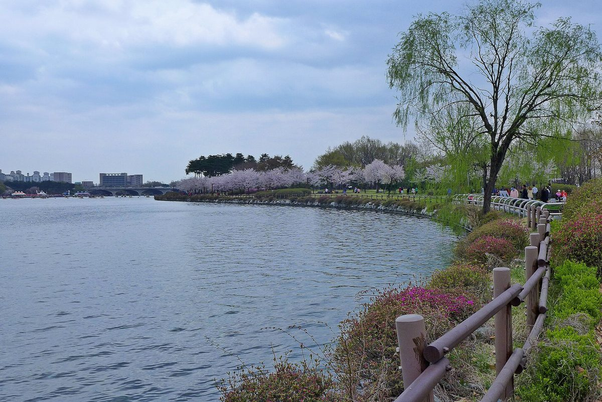

동서발전·고양시, 일산호수공원 공영주차장 태양광 협약…분산에너지 특화지역 계획도 함께

주차 기능 유지한 경관특화형 모델 개발해 관내 확산, 일산 열병합발전소 현대화사업엔 지역업체 우선 참여…용량·사업비·시민 참여 여부는 안 나와
한국동서발전과 경기 고양특례시가 일산호수공원 공영주차장에 주차 기능을 그대로 두는 '경관특화형' 주차장 태양광 모델을 개발하기로 하고 5일 오전 고양시청에서 상생협력 업무협약을 맺었다. 동서발전은 이 모델을 관내 다른 공공시설과 주차장으로 넓히는 방안을 추진하고, 일산 열병합발전소 현대화사업을 하면서 지역 건설업체의 공사 참여와 지역업체 물품 구매를 우선하기로 했다. 두 기관은 지역에서 만든 에너지를 지역에서 쓰는 분산에너지를 늘리기 위해 분산에너지 특화지역 추진계획을 세우고 지역 여건에 맞는 신재생에너지 설치도 함께 추진한다. 고양시는 협력 방안을 함께 찾고 인허가와 행정절차, 홍보를 지원하기로 했다. 권명호 동서발전 사장은 "일산 현대화사업과 재생에너지 사업의 성과가 지역 주민과 지역 기업에 돌아가는 진정한 상생 모델을 만들어 가겠다"고 말했다. 다만 주차장 태양광의 설비 용량과 주차면 수, 사업비, 수익이 누구에게 돌아가는지와 시민 참여 여부는 이번 협약에서 공개되지 않았다.
시민에너지 관점
스코틀랜드 정부는 지역사회와 주민이 소유하는 재생에너지를 2020년 1GW, 2030년 2GW까지 늘리겠다는 목표를 내걸어, 얼마나 짓느냐와 함께 누가 발전소를 갖느냐를 정책 목표로 삼았다. 발전공기업이 직접 짓는 편이 빠르고 안정적이라는 반론이 있을 수 있지만, 시민이 매일 차를 대는 공영주차장은 시민 공동의 자산이어서 그 위에 서는 발전소에 시민이 출자하는 것이 오히려 자연스럽다. 공기업이 기술과 운영을 맡고 시민과 협동조합이 지분을 나눠 가지면 수익이 지역에 머물고, 지역에서 만들어 지역에서 쓴다는 협약의 취지도 제대로 살아난다. 동서발전과 고양시는 호수공원 사업의 용량과 수익 구조를 정하는 단계에서 시민 출자 몫을 함께 내놓고, 관내로 넓힐 때도 그 원칙을 지켜야 한다.
출처: 에너지데일리 2026-11-05 송병훈 원문 보기
출처: 전기신문 2026-11-05 정세영 원문 보기
東西発電・高陽市、一山湖水公園の公営駐車場に太陽光で協約…分散エネルギー特化地域の計画も
駐車機能を保つ景観特化型モデルを開発して市内に拡大、一山熱併給発電所の現代化事業では地元業者を優先…容量・事業費・市民参加の有無は示されず
韓国東西発電と京畿道の高陽特例市は、一山湖水公園の公営駐車場に駐車機能をそのまま残す「景観特化型」駐車場太陽光のモデルを開発することにし、5日午前に高陽市庁で相生協力の業務協約を結んだ。東西発電はこのモデルを市内のほかの公共施設や駐車場に広げる方策を進め、一山熱併給発電所の現代化事業では地元建設業者の工事参加と地元業者からの物品購入を優先する。両機関は、地域でつくったエネルギーを地域で使う分散エネルギーを増やすため、分散エネルギー特化地域の推進計画を策定し、地域の条件に合った新再生可能エネルギーの設置もあわせて進める。高陽市は協力策をともに探り、許認可や行政手続き、広報を支援する。クォン・ミョンホ東西発電社長は「一山の現代化事業と再生可能エネルギー事業の成果が地域住民と地元企業に還元される真の相生モデルをつくっていく」と述べた。ただ、駐車場太陽光の設備容量や駐車台数、事業費、収益の帰属先、市民参加の有無は今回の協約では公表されなかった。
市民エネルギーの視点
スコットランド政府は、地域社会と住民が所有する再生可能エネルギーを2020年に1GW、2030年に2GWまで増やす目標を掲げ、どれだけ建てるかとともに誰が発電所を持つかを政策目標に据えた。発電公企業が自ら建てる方が速く安定しているとの反論もありうるが、市民が毎日車を止める公営駐車場は市民共有の資産であり、その上に建つ発電所に市民が出資するのはむしろ自然なことだ。公企業が技術と運営を担い、市民と協同組合が持ち分を分け合えば、収益が地域にとどまり、地域でつくって地域で使うという協約の趣旨も本当に生きてくる。東西発電と高陽市は、湖水公園事業の容量と収益構造を決める段階で市民の出資枠をあわせて示し、市内に広げる際もその原則を守るべきだ。
出典: エネルギーデイリー 2026-11-05 ソン・ビョンフン 原文を読む
出典: 電気新聞（韓国） 2026-11-05 チョン・セヨン 原文を読む
东西发电与高阳市就一山湖水公园公共停车场光伏签署协议…同时制定分布式能源特区计划
开发保留停车功能的景观特色型模式并在市内推广，一山热电联产电站现代化项目优先让本地企业参与…装机容量、项目费用及市民是否参与未公布
韩国东西发电与京畿道高阳特例市决定在一山湖水公园公共停车场开发保留原有停车功能的"景观特色型"停车场光伏模式，并于5日上午在高阳市政府签署了共赢合作业务协议。东西发电将推进把这一模式推广到市内其他公共设施和停车场，并在推进一山热电联产电站现代化项目时，优先让本地建筑企业参与施工、优先采购本地企业物品。两家机构为扩大本地生产、本地消费的分布式能源，将制定分布式能源特区推进计划，并共同推进适合当地条件的新能源和可再生能源设施建设。高阳市将共同探讨合作方案，并在许可、行政手续和宣传方面提供支持。东西发电社长Kwon Myung-ho表示："将打造让一山现代化项目和可再生能源项目的成果回馈当地居民和本地企业的真正共赢模式。"不过，停车场光伏的装机容量、车位数、项目费用、收益归属以及市民是否参与，此次协议均未公布。
市民能源视角
苏格兰政府提出了让社区和居民所有的可再生能源在2020年达到1GW、2030年达到2GW的目标，把建多少和电站归谁所有一并作为政策目标。有人可能反驳说，由发电国企自己建设更快更稳，但市民每天停车的公共停车场本身就是市民的共同资产，让市民出资入股建在其上的电站反而更顺理成章。由国企负责技术和运营、市民和合作社分享股份，收益才能留在本地，"本地生产、本地消费"的协议宗旨也才能真正落地。东西发电和高阳市应在确定湖水公园项目容量和收益结构的阶段同时拿出市民出资份额，并在向市内推广时坚持这一原则。
来源: 能源日报（Energy Daily） 2026-11-05 Song Byung-hoon 查看原文
来源: 电气新闻（韩国） 2026-11-05 Jung Se-young 查看原文
Korea East-West Power and Goyang sign agreement on solar for the Ilsan Lake Park public car park, along with a distributed energy zone plan
A landscape-friendly design that keeps parking in use will be developed and spread across the city, and local firms get priority in modernising the Ilsan combined heat and power plant; capacity, cost and citizen participation were not disclosed
Korea East-West Power and Goyang Special City in Gyeonggi Province signed a cooperation agreement at Goyang City Hall on the morning of Nov. 5 to develop a "landscape-friendly" car-park solar model at the Ilsan Lake Park public car park that keeps the parking function intact. East-West Power will pursue extending the model to other public facilities and car parks in the city, and in modernising the Ilsan combined heat and power plant it will give priority to local construction firms for the work and to local suppliers for purchases. To expand distributed energy produced and used locally, the two will draw up a plan for a distributed energy special zone and jointly pursue renewable energy installations suited to local conditions. Goyang will look for ways to cooperate and support permits, administrative procedures and publicity. East-West Power President Kwon Myung-ho said the company would build "a true win-win model in which the results of the Ilsan modernisation and renewable energy projects return to local residents and local businesses." The car-park solar system's capacity, number of parking spaces, project cost, who receives the income and whether citizens can take part were not disclosed in the agreement.
Citizen Energy View
Scotland's government set targets of 1GW of community- and locally owned renewable energy by 2020 and 2GW by 2030, making who owns the plants a policy goal alongside how much is built. Some may argue that it is faster and more reliable for a state-owned generator to build the plant itself, but a public car park where citizens park every day is a shared civic asset, so it is only natural for citizens to invest in a plant built on top of it. If the public company handles technology and operation while citizens and cooperatives share the equity, the income stays in the area and the agreement's aim of producing and using energy locally is truly realised. East-West Power and Goyang should set out a share for citizen investment when they decide the Lake Park project's capacity and revenue structure, and keep to that principle when extending the model across the city.
Source: Energy Daily 2026-11-05 Song Byung-hoon Read the original
Source: Electric Times (Korea) 2026-11-05 Jung Se-young Read the original